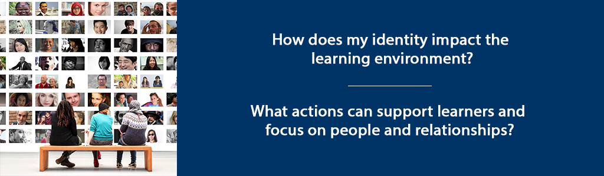

Overview
As you have explored in units 1-5, personal authenticity refers to genuineness, vulnerability and connectedness. In units 5-10 we will broaden the lens to consider the adult educator as authentic leader and facilitator in the learning environment. We will engage with the writings of Margaret Wheatley, a peace activist, philosopher, world traveler and management consultant. Before you begin the second half of the course, I invite you to take a few minutes to explore her website and get a sense of her work as it relates to creating authentic learning communities. Her book contains powerful concepts that will challenge you to see leadership with a new lens. She suggests that her book not be read but savoured because the concepts need to be dwelt upon. I agree that you will get more out the book if you take your time, pause frequently and note ideas in your reflective journal.
In this unit we will consider the impact of identity in a learning environment and the adult educator as creator and leader of a learner centered environment. Given the prominence of technology in contemporary society, we will consider Wheatley’s comments about the use of technology and how this influences leadership and communication.
Unit 6 focuses on two guiding questions:
- How does my identity impact the learning environment?
- What actions can support learners and focus on people and relationships?
Topics
- The Impact of Identity in a Learning Environment
- The Adult Educator as Creator and Leader of a Learner Centered Learning Environment
Learning Outcomes
When you have completed this unit you should be able to:
- Evaluate personal and professional attitudes towards technology in light of authentic learning and identity.
- Develop a personal philosophy of the role of facilitator in creating authentic learning communities
- Evaluate and choose strategies to adapt to the identity and learning needs of participants.
Activity Checklist
These learning activities will engage you in considering the guiding questions for this unit. As you plan your week, be sure to include time for these important learning activities. Note that not all activities are required. Your instructor will provide guidance on key activities to complete.
6.1 The Impact of Identity in a Learning Environment
An essential question for adult educators to reflect on is: What matters to me and how can my work advance this in some way? Discovering and acting upon a purpose beyond oneself brings meaning to work and can motivate learners to find meaning also. This leads to a deeper commitment and sense of fulfillment. Having a greater purpose creates unity and fights fragmentation in the activities of life. The words of Jean Vanier are a call to action for all adult educators:
It is always good for individuals, communities and indeed nations, to remember that their present situation is a result of the thousands of gestures of love or hate that came before. This obliges us to remember that the community of tomorrow is being born of our fidelity to the present. We discover that we are at the same time very insignificant and very important because each of our actions is preparing the humanity of tomorrow; it is a tiny contribution to the huge and glorious final humanity. (Vanier, 1989, p.152)
What we value, we prioritize, and this directs our work and lives, shaping not just what we do but who we become. We need to start practicing now who we want to be in the future (Bregman, P., 2016).
Adult educators have a privileged position in the lives of their students that can be leveraged to help them develop the skills, attitudes and dispositions they need to improve their lives and those of others. In this sense, an adult educator is a leader of self and a leader in the classroom. Who we are matters.
Figuring out how our identity impacts the learning environment involves discerning our personal values through self-reflection. What makes us act and react the way we do? Through what screens do we view and respond to life? On what basis do we make decisions? Questions, like those in the following list (Atha et al., 2018, p. 26), can assist with the values and identity discernment process:
- What is important to me?
- What makes me feel fulfilled?
- What make me feel angry or indignant?
- What makes my life meaningful?
- What makes me feel fulfilled and gets my adrenalin flowing?
- What influences my decision-making process?
- How do I like to be treated?
- How do I treat others?
6.1.1 Activity: Wheatley Reading and Reflection
6.2 The Adult Educator as Creator and Leader of a Learner Centered Learning Environment
Being ‘learner centered’ means teaching people not subjects. It means thinking about who is in your class, their prior knowledge about the topic, any fears or resistance they may bring to the topic and only then planning for facilitation of content. The person of the learner - not the curriculum - is the primary focus. A skillful educator however, will use the content to impact the learner and attain learning objectives. For adult educators who strive to be servant leaders, the undergirding value is human dignity, as philosopher Immanuel Kant admonishes:
Act so that you treat humanity, whether in your own person or in that of another, always as an end and never as a means only. (Rachels, 1986, p. 1)
Servant leadership is an appropriate model for adult educators who strive to:
serve others by investing in their development and well-being for the benefit of the common good. … aspire to be great only in their service to others… with integrity, humility, sincere concern, a generous, forgiving and giving heart, and self-discipline… by investing, empowering, caring for, and consulting others. (Atha et al, 2018, p. 1)
The resources you have in Brookfield, Silberman and Lipmanowiz and McCandess are learner centered in that their goal is learner engagement. Skillful adult educators try to avoid what Lipmanowicz and McCandless (2013) assert:
Unwittingly, the conventional structures used to organize how people routinely work together stifle inclusion and engagement. Conventional structures are either too inhibiting (presentations, status reports and managed discussions) or too loose and disorganized (open discussions and brainstorms) to creatively engage people in shaping their own future. They frequently generate feelings of frustration and/or exclusion and fail to provide space for good ideas to emerge and germinate. (from http://www.liberatingstructures.com/home/)
By incorporating liberating structures or those suggested by Brookfield and Silberman, you will indeed avoid methods and processes that stifle. Instead, you will liberate learners to express themselves and be transformed into agents of transformation. Strategies for engagement build confidence and can have a strong, positive impact on self-efficacy and identity in the sense of empowering learners to take action. As an adult educator you have a role of equipping leaders – whether for self-leadership or leadership with others. This broader view of the role can also be purpose-filled and motivating so embrace and enjoy it!
6.2.1 Activity: Strategies for Supporting Learners
Summary
In this unit, you have had the opportunity to learn about the adult educator as authentic leader and facilitator in the learning environment. You have considered the impact of identity in a learning environment and the adult educator as creator and leader of a learner centered environment.
Assessment
Please submit your assignments in the appropriate dropbox in Moodle. See the Assessment section for the Grading Criteria that explains how your assignments will be evaluated.
Checking Your Learning
Resources
- Atha, D.L., Castellon, A.R., Strong, H., & Wu, T. (2017). MA Leadership and MA in Educational Leadership Monograph 2018. Unpublished Manuscript Trinity Western University, Langley BC, (70), 22–32.
- Brookfield, Stephen and Preskill, S. (2016). The Discussion Book: 50 Great Ways to Get People Talking. San Francisco: Jossey Bass. Various; as needed
- Lipmanowicz, H., McCandless, K. (2013) Liberating Structures. Creative Commons License. Liberating Structures Press. Retrieved from: https://www.liberatingstructures.com/
- Rachels, J. (1986). The Elements of Moral Philosophy, pp. 114-17,122-23. NY: Random House, Inc.
- Silberman, M. L., & Biech, E. (2015). Active training: A handbook of techniques, designs, case examples, and tips (4th ed.). Wiley. Various; as needed.
- Wheatley, M. (2017). Who Do We Choose to Be? : Facing Reality, Claiming Leadership, Restoring Sanity. Oakland, CA: Berrett-Koehler Publishers.